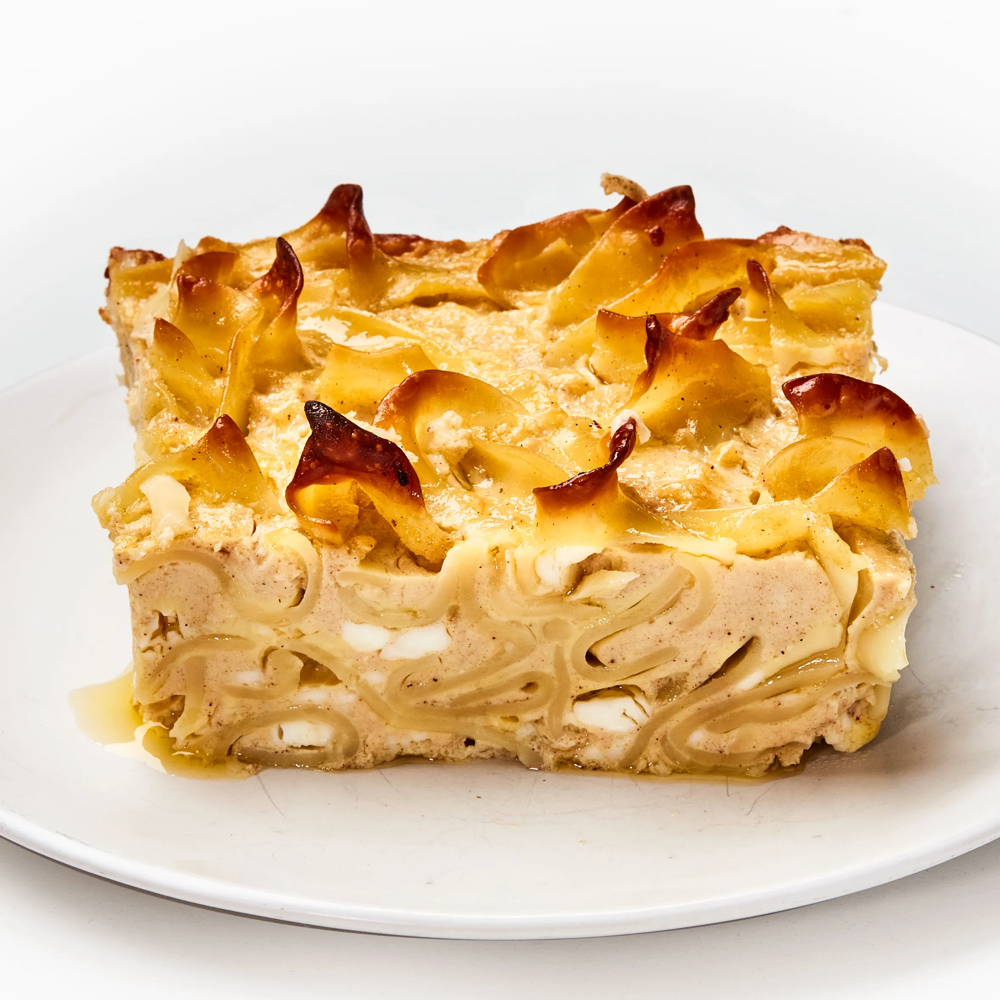

Odin Recipes
Noodle Kugel

Description
This is a classic Jewish casserole dish that is perfect for big family gatherings.
It can be made sweet or savory, but I prefer the sweet version, so this will be a
recipe for making a sweet kugel, which is perfect as a creamy, carb-heavy dessert.
People with diabetes should be cautious around this dish.
Ingredients
For the Kugel:
- 1 (8-ounce) package medium wide egg noodles
- 1 stick of unsalted butter
- 1 (8-ounce) package cream cheese
- 3/4 cup sugar
- 4 large eggs
- 1 teaspoon vanilla
- 2 cups milk
For the Topping
- 1.5 cups of cornflakes cereal
- 2 tablespoons butter
- 1 tablespoon sugar
- 2 teaspoons cinnamon
Steps
Make the Kugel
- Preheat oven to 350 F. Butter a 9 x 13 x 2 in baking dish.
- Bring a large pot of water to a boil and cook the noodles until al dente. Drain and set aside.
- In a large bowl, use an electric hand mixer or rotary beaters to beat together the butter, cream cheese, and sugar until smooth.
- Add the eggs and vanilla, and beat until well mixed.
- Pour in the milk and beat just until smooth.
- Stir the drained noodles into the egg mixture. Add the raisins, if using, and stir to combine.
- Pour into the prepared pan and smooth the top with a spatula.
Make the Topping and Bake
- In a small bowl, combine the cereal, melted butter, sugar, and cinnamon. Stir to combine. Sprinkle the topping evenly over the kugel.
- Bake in a heated oven for 1 1/4 hours or until the kugel is puffed, set in the center, and golden on the bottom.
- Remove from the oven and allow to cool on a rack for 15 to 20 minutes before cutting into squares to serve.